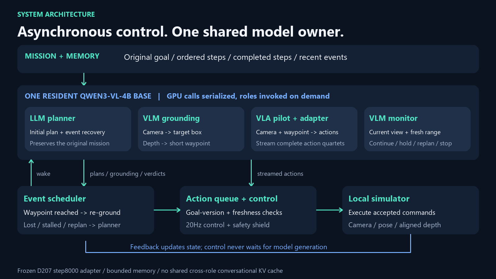

Silent, captioned saved-run replay. Real model-input camera keyframes held between requests. Original flight timing, plus title/diagram/results slides. Rendered grid3d; not AirSim or real-drone footage.

Editable vector diagram · Post draft · Training README preview · Prepared training-repo patch
# LinkedIn post — review draft, not published I've been building a small drone VLA — and connecting it to a complete local control system. One Qwen3-VL-4B base model serves four roles: a language planner, visual grounding, a VLA pilot with a trained adapter, and a visual monitor. The control loop runs asynchronously; the model calls share one GPU and run one at a time. The video replays a recorded simulation task: find the red pillar, approach it, and stop nearby while keeping it visible. The system stopped 1.33m away, within the fixed 1.5m requirement, with no collisions. This is a development demonstration, not a general-autonomy benchmark. A useful lesson: reaching a short waypoint is NOT the same as completing the mission. The planner now keeps the original goal and ordered steps in memory. Waypoint arrival triggers fresh visual guidance; task completion requires fresh proximity evidence and a visual check. On my RTX 4060 Laptop GPU, the pilot's median time to its first usable action was 206ms produced / 254ms received by the runtime. That's action latency, not the latency of the whole planning system, and not a guaranteed deadline. Next: unseen scenes, distractors and recovery tests, plus fair comparisons with simpler controllers. Training code: https://github.com/asaelbarilan/drone_small_vla_training Architecture: https://github.com/asaelbarilan/drones_architecture_comparison_paper Model: https://huggingface.co/asaelbarilan/drone-vla-qwen3vl-4b-step8000 — currently private; not a public download yet. #Robotics #VisionLanguageAction #EmbodiedAI #Drones #OpenSource
Do not describe the model as publicly downloadable yet. Its HF card also retains an unresolved derivative/data licensing review. No model visibility or remote files were changed.